Результаты приемки
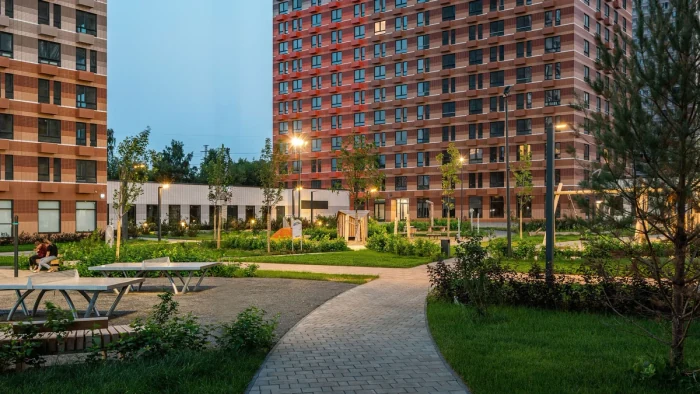
Приёмка в жилом комплексе: итоги проверки квартиры
ЖК «Второй Нагатинский»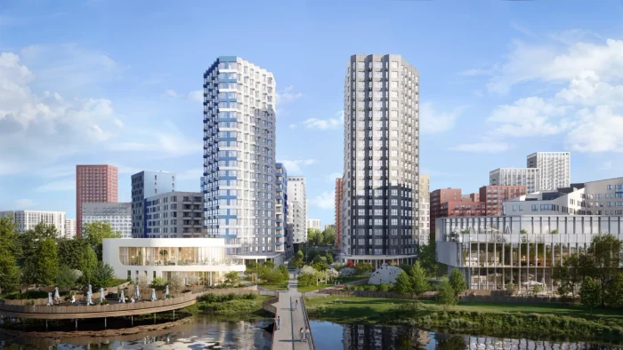
Осмотр перед передачей квартиры: что зафиксировано
ЖК «Дзен-кварталы»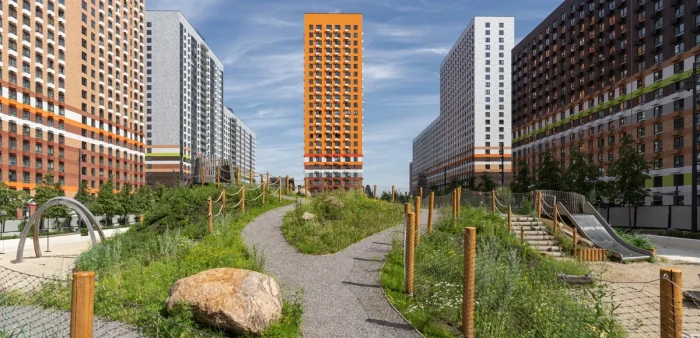
Приёмка квартиры: замечания после технической проверки
ЖК «Люблинский парк»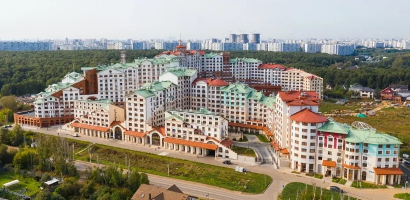
Проверка квартиры в новостройке: итоговый акт
ЖК «Римский»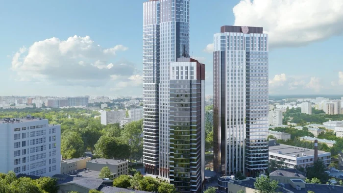
Что зафиксировали при проверке квартиры в новостройке
ЖК «Режиссёр»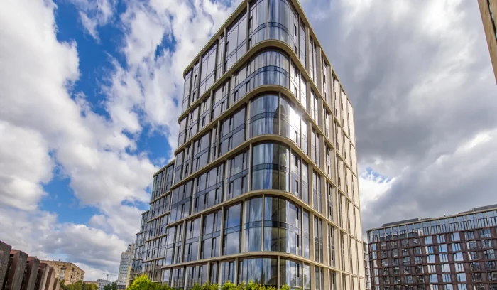
Подробности приёмки квартиры в жилом комплексе
ЖК «Виктори Парк Резиденсез (Victory Park Residences)»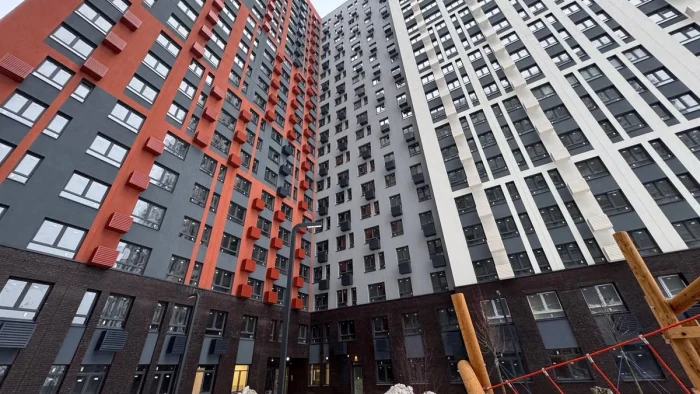
Приёмка квартиры: что отражено в акте осмотра
ЖК «Первый Московский»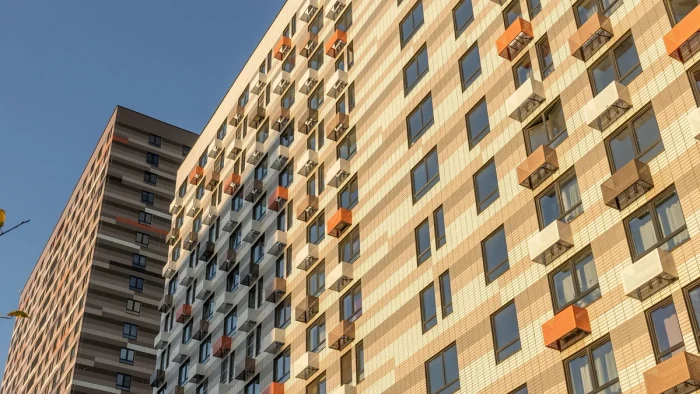
Осмотр новостройки: зафиксированные замечания
ЖК «Одинцово-1»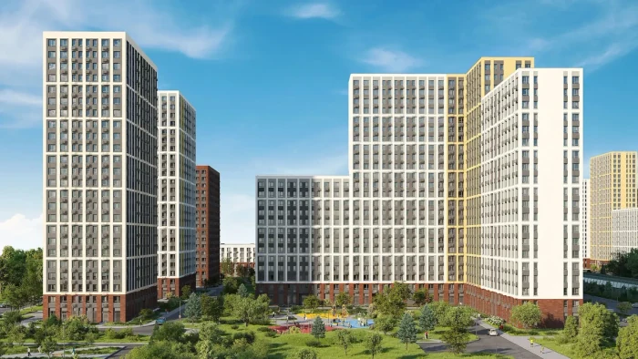
Как специалисты зафиксировали результат осмотра
ЖК «Лучи»Осмотр новостройки перед приёмкой: результат проверки
ЖК «Римский»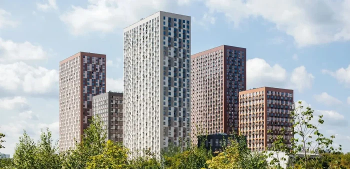
Осмотр квартиры: что увидели и внесли в акт
ЖК «Ютаново»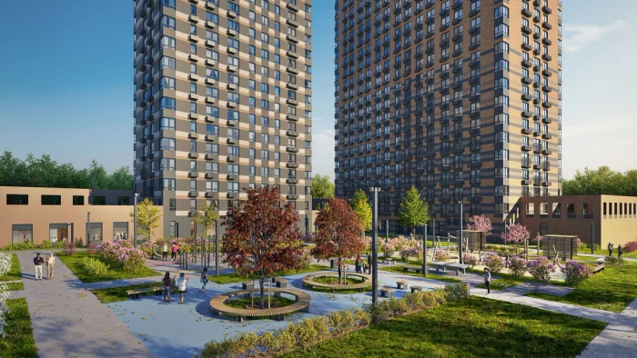
Итог осмотра квартиры перед передачей ключей
ЖК «Новое Очаково»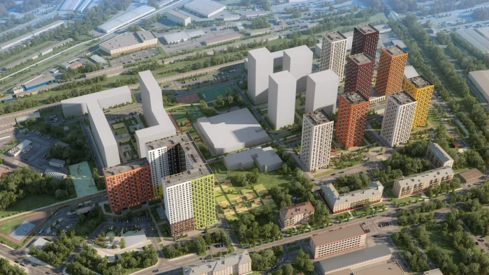
В акте осмотра собраны замечания по квартире
ЖК «Волжский парк»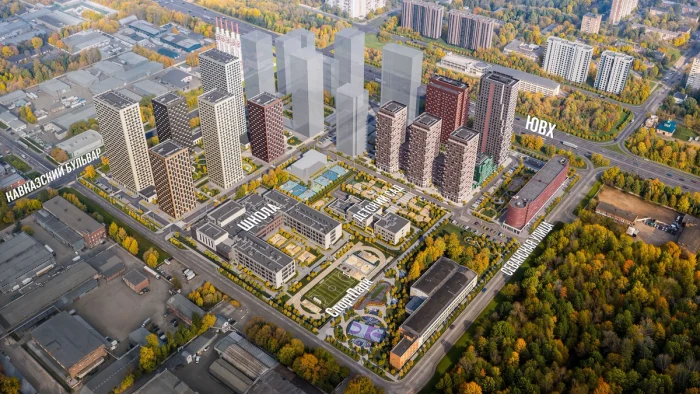
Что вошло в результат проверки квартиры
ЖК «Кавказский бульвар 51»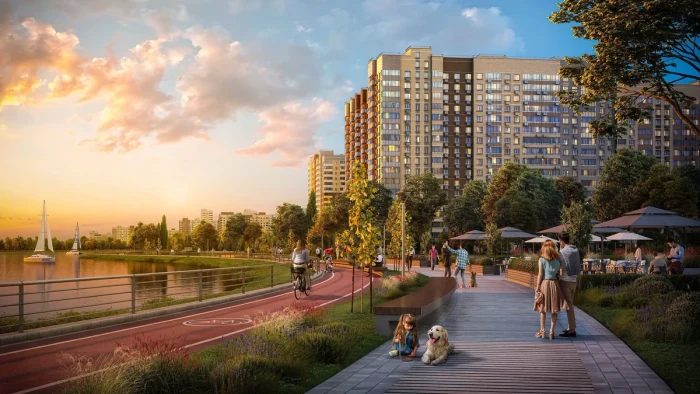
Какие замечания указаны в результате приёмки
ЖК «Люберцы»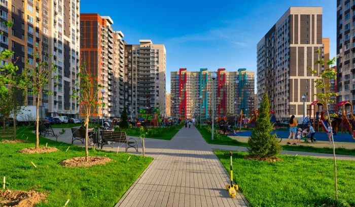
Результат осмотра квартиры в новостройке
ЖК «Пригород Лесное»Осмотр перед передачей квартиры: что зафиксировано
ЖК «Люблинский парк»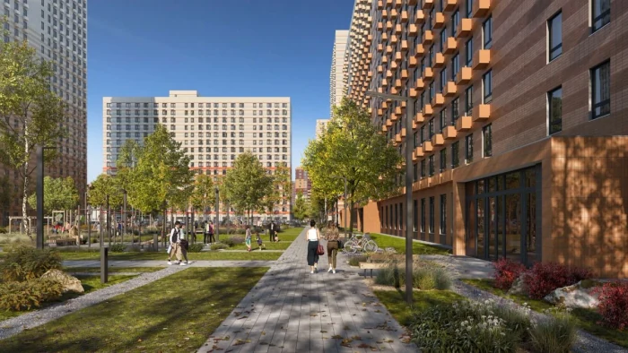
Какие детали квартиры проверили перед приёмкой
ЖК «Восточное Бутово»Осмотр квартиры: зафиксированные детали и нарушения
ЖК «Новое Очаково»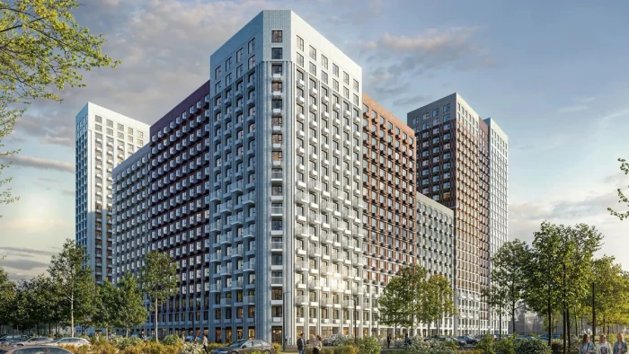
Проверка новостройки: результат осмотра квартиры
ЖК «Белая Дача парк»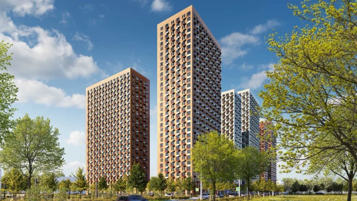
Что показала проверка квартиры перед приёмкой
ЖК «Перовское 2»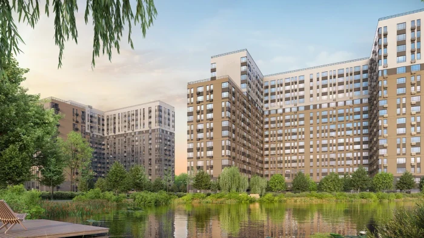
Квартира в новостройке: итоги осмотра
ЖК «Переделкино Ближнее»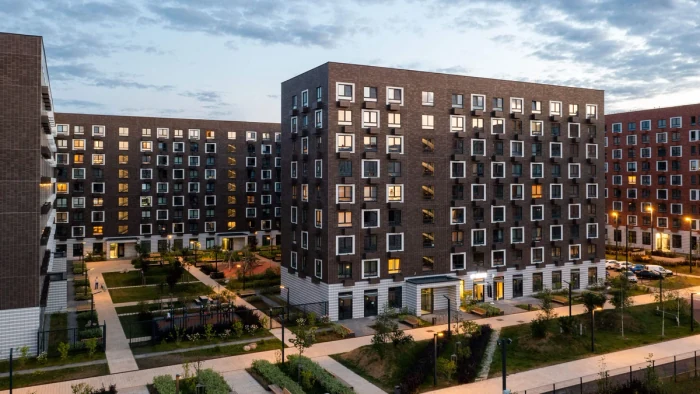
Что показала проверка квартиры перед приёмкой
ЖК «Ильинские Луга»Проверка квартиры в новом доме: краткий итог
ЖК «Восточное Бутово»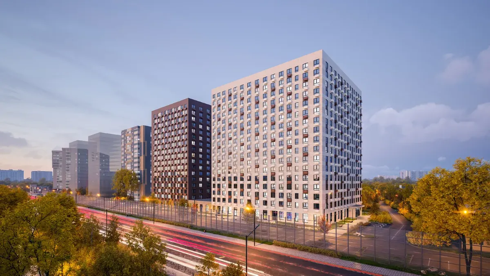
Клиенту нужен был акт, который удобно передать застройщику
ЖК «Юнино»Осмотр квартиры: зафиксированные детали и нарушения
ЖК «Волжский парк»Что показала проверка квартиры перед приёмкой
ЖК «Второй Нагатинский»Итог осмотра квартиры перед передачей ключей
ЖК «Новое Очаково»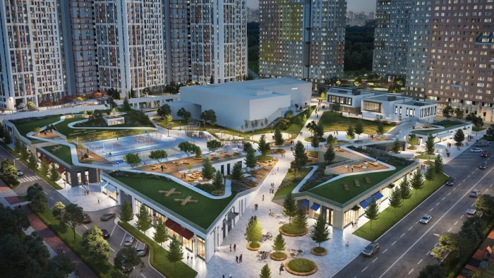
Осмотр перед передачей квартиры: что зафиксировано
ЖК «Спутник (Скай Спутник)»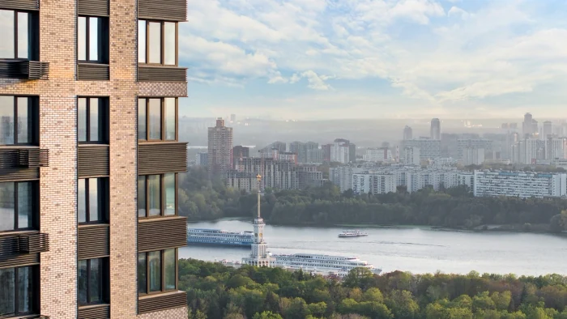
Какие детали вошли в отчёт о приёмке квартиры
ЖК «Фестиваль Парк»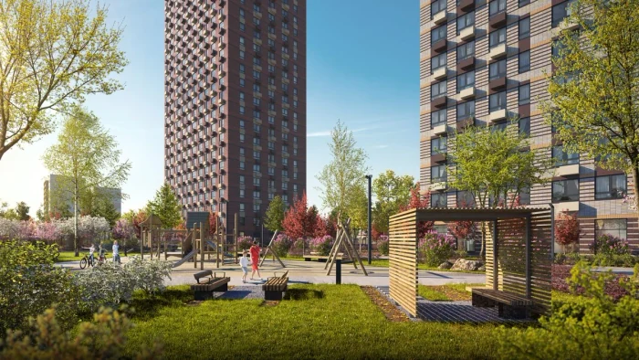
Осмотр новостройки перед приёмкой: результат проверки
ЖК «Кронштадтский 14»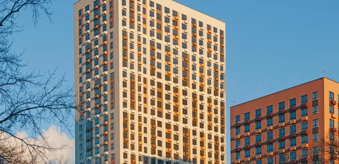
Результат приёмки: замечания по квартире в новостройке
ЖК «Открытый парк»Какие детали квартиры проверили перед приёмкой
ЖК «Перовское 2»Итог проверки квартиры перед оформлением передачи
ЖК «Переделкино Ближнее»Какие недостатки зафиксированы при осмотре квартиры
ЖК «Волжский парк»Что показала проверка квартиры перед приёмкой
ЖК «Ильинские Луга»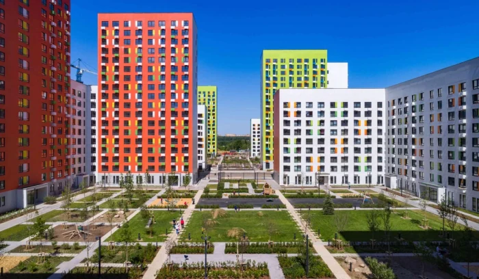
Акт приёмки квартиры: зафиксированные нарушения
ЖК «Бунинские Луга»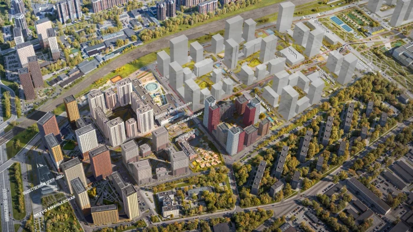
Какие детали показал осмотр квартиры перед передачей
ЖК «Матвеевский парк»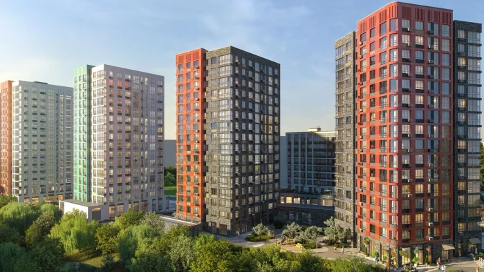
Результат проверки квартиры: замечания и детали осмотра
ЖК «Скандинавия»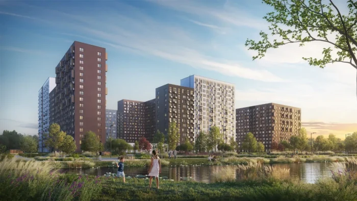
Акт осмотра квартиры: результат проверки
ЖК «Молжаниново»Результат проверки: квартира и замечания в акте
ЖК «Спутник (Скай Спутник)»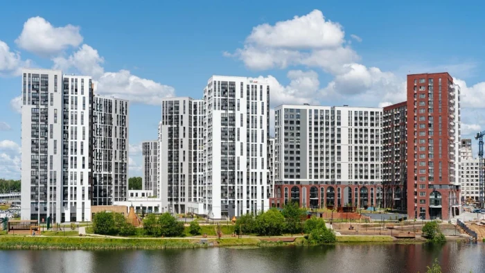
Результат осмотра квартиры в новостройке
ЖК «Прокшино»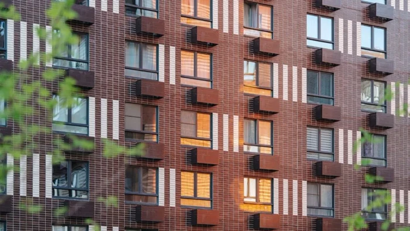
Что вошло в результат проверки квартиры
ЖК «Никольские Луга»Осмотр квартиры: список замечаний в акте
ЖК «Люблинский парк»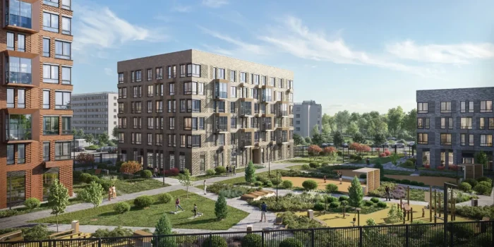
Как специалисты зафиксировали результат осмотра
ЖК «Егорово Парк»Осмотр новостройки перед приёмкой: результат проверки
ЖК «Прокшино»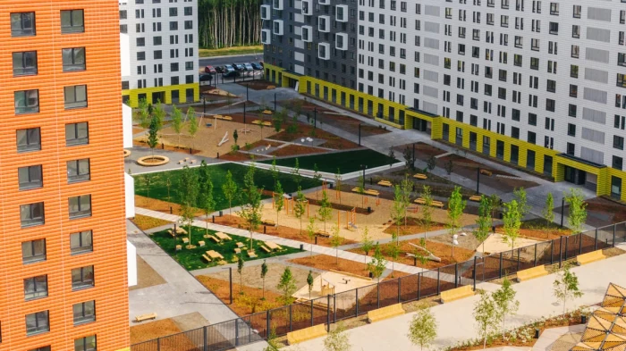
Что вошло в результат проверки квартиры
ЖК «Саларьево Парк»Проверка квартиры в новостройке: итоговый акт
ЖК «Матвеевский парк»Осмотр квартиры перед подписанием акта передачи
ЖК «Молжаниново»Проверка квартиры в новостройке: итоговый акт
ЖК «Римский»Что зафиксировали при проверке квартиры в новостройке
ЖК «Никольские Луга»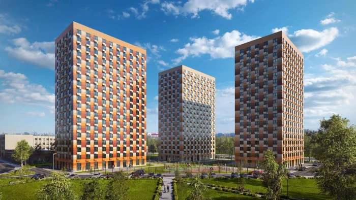
Что обнаружили при техническом осмотре квартиры
ЖК «Большая Академическая 85»Приёмка квартиры: замечания после технической проверки
ЖК «Матвеевский парк»Подробности осмотра квартиры в жилом комплексе
ЖК «Одинцово-1»Что показала проверка квартиры перед приёмкой
ЖК «Переделкино Ближнее»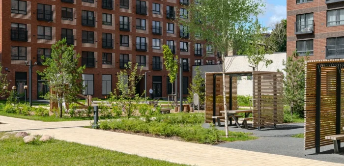
Приёмка в жилом комплексе: итоги проверки квартиры
ЖК «Барклая 6»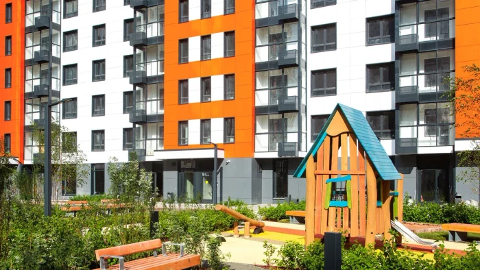
Проверка квартиры в новостройке: итоговый акт
ЖК «Митинский лес»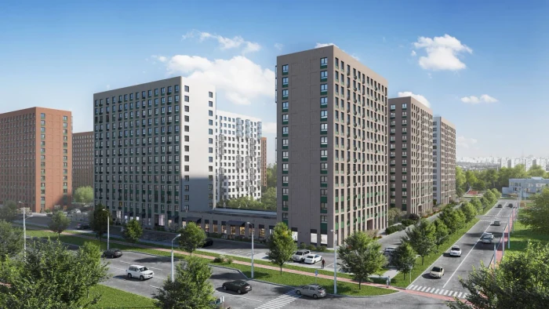
Квартира на приёмке: что зафиксировано специалистом
ЖК «Новое Внуково»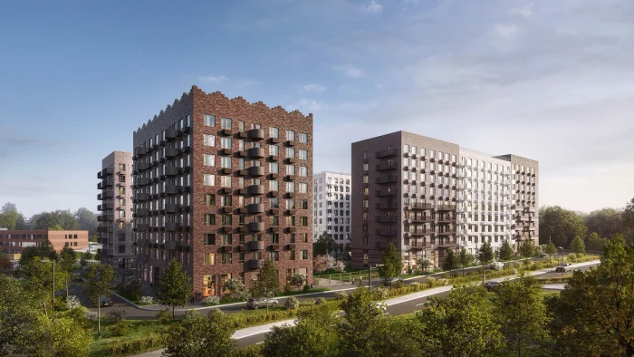
Результат осмотра квартиры в новостройке
ЖК «Середневский лес»Результаты осмотра квартиры в новом доме
ЖК «Митинский лес»Что содержит акт технического осмотра квартиры
ЖК «Пригород Лесное»Осмотр новостройки: зафиксированные замечания
ЖК «Одинцово-1»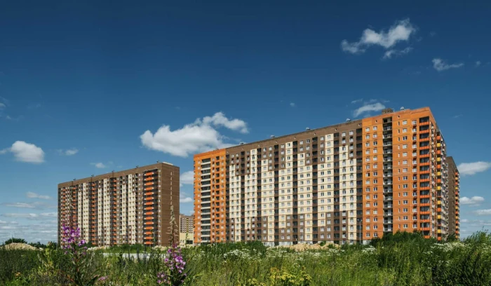
Осмотр новостройки перед приёмкой: результат проверки
ЖК «Томилино Парк»Что отмечено в акте осмотра новостройки
ЖК «Пригород Лесное»Итог проверки квартиры перед оформлением передачи
ЖК «Одинцово-1»Результат осмотра квартиры в новостройке
ЖК «Люберцы»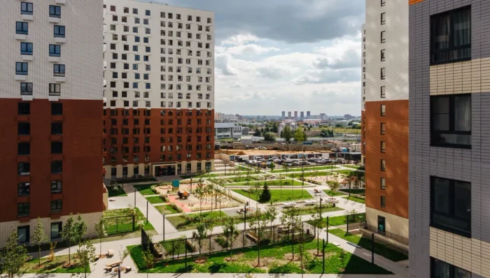
Как специалисты зафиксировали результат осмотра
ЖК «Митино Парк»Проверка квартиры перед приёмкой: краткий результат
ЖК «Томилино Парк»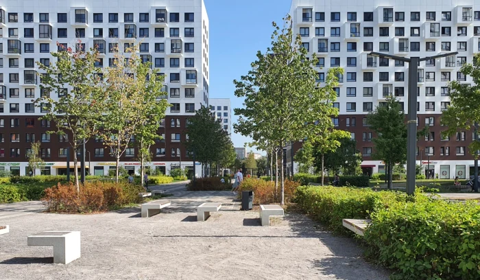
Проверка квартиры: содержание акта и фото осмотра
ЖК «Грин Парк»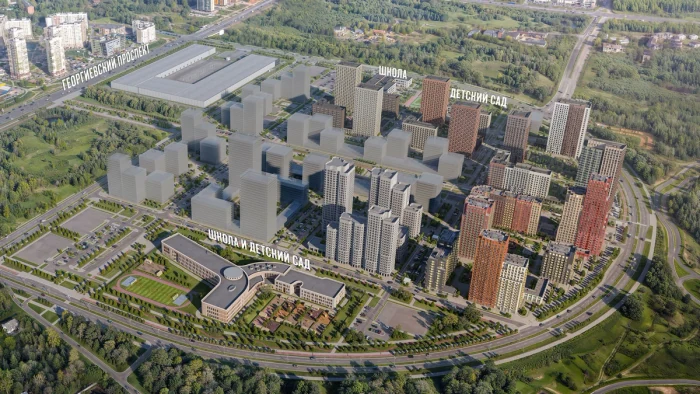
Приёмка в жилом комплексе: итоги проверки квартиры
ЖК «Зелёный парк»Какие детали вошли в отчёт о приёмке квартиры
ЖК «Новое Внуково»Какие пункты вошли в акт приёмки квартиры
ЖК «Середневский лес»Итог проверки квартиры перед оформлением передачи
ЖК «Ютаново»Акт приёмки квартиры: зафиксированные нарушения
ЖК «Бунинские Луга»Проверка квартиры: содержание акта и фото осмотра
ЖК «Новое Внуково»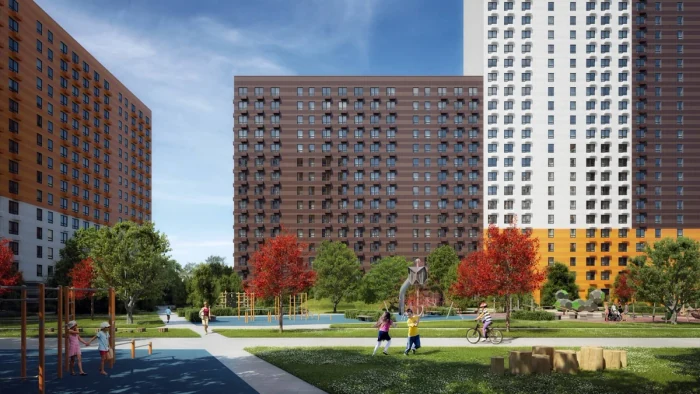
Какой результат дала проверка квартиры в новостройке
ЖК «Полярная 25»Приёмка в жилом комплексе: итоги проверки квартиры
ЖК «Томилино Парк»Результат осмотра квартиры и выявленные замечания
ЖК «Восточное Бутово»Акт приёмки квартиры: зафиксированные нарушения
ЖК «Зелёный парк»Результат осмотра квартиры в новостройке
ЖК «Кавказский бульвар 51»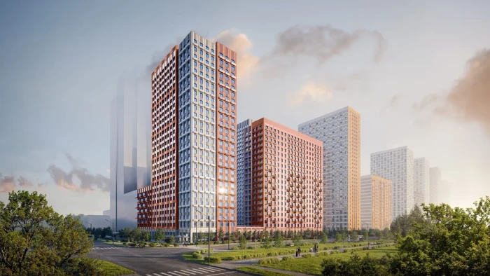
Какие детали квартиры проверили перед приёмкой
ЖК «Амурский парк»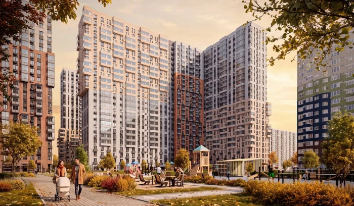
Результат осмотра квартиры и выявленные замечания
ЖК «Героев»Акт осмотра квартиры: результат проверки
ЖК «Люблинский парк»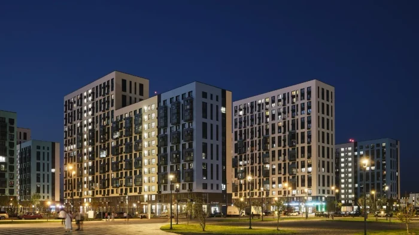
Проверка перед передачей: замечания по квартире
ЖК «Прибрежный парк»Осмотр новостройки перед приёмкой: результат проверки
ЖК «Амурский парк»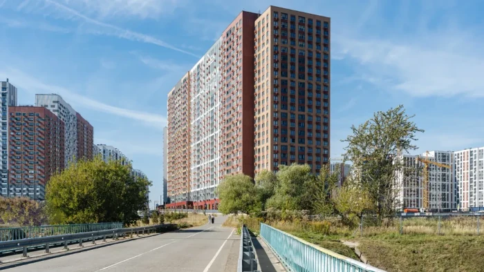
Что специалисты отметили во время осмотра квартиры
ЖК «Южная Битца»Какие детали вошли в отчёт о приёмке квартиры
ЖК «Грин Парк»Приёмка квартиры: замечания после технической проверки
ЖК «Томилино Парк»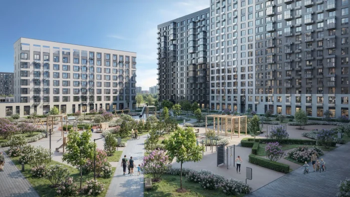
Осмотр квартиры: зафиксированные детали и нарушения
ЖК «Мытищи Парк»Результат осмотра квартиры и выявленные замечания
ЖК «Зелёный парк»Технический осмотр квартиры: итоги и замечания
ЖК «Большая Академическая 85»Приёмка квартиры: что отражено в акте осмотра
ЖК «Матвеевский парк»Что специалисты отметили во время осмотра квартиры
ЖК «Люблинский парк»Приёмка квартиры: замечания после технической проверки
ЖК «Амурский парк»Приёмка квартиры: что отражено в акте осмотра
ЖК «Волжский парк»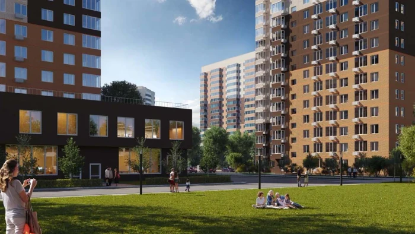
Подробности приёмки квартиры в жилом комплексе
ЖК «Столичный»Акт приёмки квартиры: зафиксированные нарушения
ЖК «Егорово Парк»Осмотр квартиры: что увидели и внесли в акт
ЖК «Столичный»Осмотр новостройки перед приёмкой: результат проверки
ЖК «Зелёный парк»Результат проверки квартиры: замечания и детали осмотра
ЖК «Прибрежный парк»Как специалисты зафиксировали результат осмотра
ЖК «Амурский парк»Осмотр новостройки перед приёмкой: результат проверки
ЖК «Егорово Парк»Как специалисты зафиксировали результат осмотра
ЖК «Зелёный парк»Подробности осмотра квартиры в жилом комплексе
ЖК «Прокшино»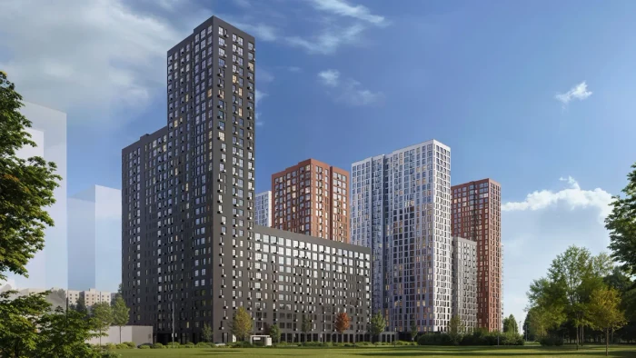
Осмотр новостройки перед приёмкой: результат проверки
ЖК «Южные сады»Проверка новостройки: результат осмотра квартиры
ЖК «Кронштадтский 14»Осмотр новостройки: зафиксированные замечания
ЖК «Матвеевский парк»Что показала проверка квартиры перед приёмкой
ЖК «Испанские кварталы 2»Что зафиксировали при проверке квартиры в новостройке
ЖК «Люблинский парк»Какие замечания выявлены при осмотре новостройки
ЖК «Прокшино»Какие детали квартиры проверили перед приёмкой
ЖК «Егорово Парк»Что показал осмотр квартиры перед передачей ключей
ЖК «Кавказский бульвар 51»Что обнаружили при техническом осмотре квартиры
ЖК «Амурский парк»Приёмка квартиры: что отражено в акте осмотра
ЖК «Мытищи Парк»Результат осмотра квартиры в новостройке
ЖК «Грин Парк»Как специалисты зафиксировали результат осмотра
ЖК «Восточное Бутово»В акте осмотра собраны замечания по квартире
ЖК «Амурский парк»Как специалисты зафиксировали результат осмотра
ЖК «Люблинский парк»Приёмка квартиры: замечания после технической проверки
ЖК «Матвеевский парк»Что зафиксировали при проверке квартиры в новостройке
ЖК «Грин Парк»В акте осмотра собраны замечания по квартире
ЖК «Амурский парк»Проверка перед передачей: замечания по квартире
ЖК «Люблинский парк»Какой результат дала проверка квартиры в новостройке
ЖК «Середневский лес»Как проходит проверка квартиры перед передачей
ЖК «Лосиноостровский парк»Приёмка квартиры: замечания после технической проверки
ЖК «Второй Нагатинский»Что содержит акт технического осмотра квартиры
ЖК «Переделкино Ближнее»Результат приёмки: замечания по квартире в новостройке
ЖК «Люблинский парк»Приёмка квартиры: что отражено в акте осмотра
ЖК «Бунинские Луга»Как выглядит результат технического осмотра квартиры
ЖК «Героев»Что отмечено в акте осмотра новостройки
ЖК «Остафьево»Что вошло в результат проверки квартиры
ЖК «Люблинский парк»Приёмка квартиры: что отражено в акте осмотра
ЖК «Бусиновский парк»Осмотр квартиры: что увидели и внесли в акт
ЖК «Кольская 8»Результат проверки квартиры: замечания и детали осмотра
ЖК «Кавказский бульвар 51»Квартира на приёмке: что зафиксировано специалистом
ЖК «Люблинский парк»Какие детали квартиры проверили перед приёмкой
ЖК «Бутово Парк 2»Результат проверки квартиры: замечания и детали осмотра
ЖК «Кавказский бульвар 51»Какие детали показал осмотр квартиры перед передачей
ЖК «Ильинские Луга»Что показал осмотр квартиры перед передачей ключей
ЖК «Матвеевский парк»Квартира перед передачей: детали проверки
ЖК «Восточное Бутово»Что зафиксировали при проверке квартиры в новостройке
ЖК «Люблинский парк»Технический осмотр квартиры: итоги и замечания
ЖК «Бутово Парк 2»Проверка квартиры: от осмотра до списка замечаний
ЖК «Бунинские Луга»Что отмечено в акте осмотра новостройки
ЖК «Люблинский парк»Что содержит акт технического осмотра квартиры
ЖК «Новоград Павлино»Проверка квартиры в новостройке: итоговый акт
ЖК «Новоград Павлино»Приёмка в жилом комплексе: итоги проверки квартиры
ЖК «Люблинский парк»Результат осмотра: квартира в новом жилом комплексе
ЖК «Егорово Парк»Результат осмотра квартиры и выявленные замечания
ЖК «Томилино Парк»Результат приёмки: замечания по квартире в новостройке
ЖК «Грин Парк»Осмотр квартиры: список замечаний в акте
ЖК «Бусиновский парк»Осмотр новостройки: зафиксированные замечания
ЖК «Грин Парк»Осмотр квартиры: что увидели и внесли в акт
ЖК «Мытищи Парк»Что отмечено в акте осмотра новостройки
ЖК «Волжский парк»Какие детали вошли в отчёт о приёмке квартиры
ЖК «Люблинский парк»Проверка перед передачей: замечания по квартире
ЖК «Люблинский парк»Квартира в новостройке: итоги осмотра
ЖК «Героев»Итог проверки квартиры перед оформлением передачи
ЖК «Одинцово-1»Проверка квартиры: содержание акта и фото осмотра
ЖК «Люблинский парк»Какие замечания вошли в акт осмотра квартиры
ЖК «Люберцы»Подробности приёмки квартиры в жилом комплексе
ЖК «Кронштадтский 14»Какие недостатки зафиксированы при осмотре квартиры
ЖК «Ильинские Луга»Квартира на приёмке: что зафиксировано специалистом
ЖК «Остафьево»Как специалисты зафиксировали результат осмотра
ЖК «Новая Рига»Что показала проверка квартиры перед приёмкой
ЖК «Лосиноостровский парк»Проверка квартиры в новом доме: краткий итог
ЖК «Матвеевский парк»Какие замечания указаны в результате приёмки
ЖК «Мичуринский парк»Результат проверки: квартира и замечания в акте
ЖК «Бусиновский парк»Проверка квартиры: от осмотра до списка замечаний
ЖК «Саларьево Парк»Результат проверки квартиры: замечания и детали осмотра
ЖК «Грин Парк»Как выглядит результат технического осмотра квартиры
ЖК «Второй Нагатинский»Как специалисты зафиксировали результат осмотра
ЖК «Восточное Бутово»Результат проверки квартиры: замечания и детали осмотра
ЖК «Заречье Парк»Приёмка квартиры: что отражено в акте осмотра
ЖК «Егорово Парк»Осмотр новостройки: зафиксированные замечания
ЖК «Остафьево»Итоги технической проверки квартиры в жилом комплексе
ЖК «Матвеевский парк»Что отмечено в акте осмотра новостройки
ЖК «Испанские кварталы»Осмотр квартиры: зафиксированные детали и нарушения
ЖК «Новоград Павлино»Квартира перед передачей: детали проверки
ЖК «Бутово Парк 2»Как специалисты зафиксировали результат осмотра
ЖК «Восточное Бутово»Итоги технической проверки квартиры в жилом комплексе
ЖК «Новое Внуково»Какой результат дала проверка квартиры в новостройке
ЖК «Прибрежный парк»Как проходит проверка квартиры перед передачей
ЖК «Кольская 8»Осмотр перед передачей квартиры: что зафиксировано
ЖК «Матвеевский парк»Проверка квартиры перед приёмкой: краткий результат
ЖК «Кавказский бульвар 51»Осмотр перед передачей квартиры: что зафиксировано
ЖК «Новая Рига»Какие недостатки зафиксированы при осмотре квартиры
ЖК «Грин Парк»Приёмка в жилом комплексе: итоги проверки квартиры
ЖК «Второй Нагатинский»Осмотр новостройки перед приёмкой: результат проверки
ЖК «Кленовые Аллеи»Итоги осмотра квартиры перед передачей застройщику
ЖК «Новое Внуково»Результат проверки: квартира и замечания в акте
ЖК «Полярная 25»Какие замечания вошли в акт осмотра квартиры
ЖК «Восточное Бутово»Квартира в новостройке: итоги осмотра
ЖК «Лосиноостровский парк»Результат осмотра: квартира в новом жилом комплексе
ЖК «Лучи»Результат осмотра: квартира в новом жилом комплексе
ЖК «Грин Парк»Итоги осмотра квартиры перед передачей застройщику
ЖК «Бунинские Луга»Техническая проверка квартиры: содержание результата
ЖК «Заречье Парк»Технический осмотр квартиры: итоги и замечания
ЖК «Прибрежный парк»Какие детали показал осмотр квартиры перед передачей
ЖК «Героев»Какие замечания вошли в акт осмотра квартиры
ЖК «Волжский парк»Что обнаружили при техническом осмотре квартиры
ЖК «Егорово Парк»Приёмка квартиры: что отражено в акте осмотра
ЖК «Второй Нагатинский»Какие пункты вошли в акт приёмки квартиры
ЖК «Бунинские Луга»Что вошло в результат проверки квартиры
ЖК «Заречье Парк»Акт осмотра квартиры: результат проверки
ЖК «Грин Парк»Какой результат дала проверка квартиры в новостройке
ЖК «Новое Внуково»В акте осмотра собраны замечания по квартире
ЖК «Люблинский парк»Результат осмотра квартиры в новостройке
ЖК «Прокшино»Техническая проверка квартиры: содержание результата
ЖК «Прибрежный парк»Приёмка квартиры: замечания после технической проверки
ЖК «Второй Нагатинский»Квартира перед передачей: детали проверки
ЖК «Томилино Парк»Результат осмотра: квартира в новом жилом комплексе
ЖК «Грин Парк»Какой результат дала проверка квартиры в новостройке
ЖК «Мытищи Парк»Техническая проверка квартиры: содержание результата
ЖК «Одинцово-1»Что специалисты отметили во время осмотра квартиры
ЖК «Прибрежный парк»Какие замечания выявлены при осмотре новостройки
ЖК «Волжский парк»Проверка квартиры: содержание акта и фото осмотра
ЖК «Героев»Какие пункты вошли в акт приёмки квартиры
ЖК «Люберцы»Акт осмотра квартиры: результат проверки
ЖК «Алхимово»Какие замечания вошли в акт осмотра квартиры
ЖК «Заречье Парк»Результат осмотра квартиры и выявленные замечания
ЖК «Грин Парк»Что содержит акт технического осмотра квартиры
ЖК «Мякинино парк»Приёмка квартиры: что отражено в акте осмотра
ЖК «Бутово Парк 2»Осмотр новостройки: зафиксированные замечания
ЖК «Испанские кварталы 2»Проверка квартиры в новостройке: итоговый акт
ЖК «Героев»Что отмечено в акте осмотра новостройки
ЖК «Заречье Парк»В акте осмотра собраны замечания по квартире
ЖК «Волжский парк»Какие недостатки зафиксированы при осмотре квартиры
ЖК «Томилино Парк»Технический осмотр квартиры: итоги и замечания
ЖК «Второй Нагатинский»Осмотр квартиры: список замечаний в акте
ЖК «Ютаново»Итоги технической проверки квартиры в жилом комплексе
ЖК «Саларьево Парк»Какие детали вошли в отчёт о приёмке квартиры
ЖК «Волжский парк»Что показала проверка квартиры перед приёмкой
ЖК «Пригород Лесное»Проверка квартиры в новостройке: итоговый акт
ЖК «Егорово Парк»Результат осмотра: квартира в новом жилом комплексе
ЖК «Восточное Бутово»Что отмечено в акте осмотра новостройки
ЖК «Сигнальный 16»Осмотр перед передачей квартиры: что зафиксировано
ЖК «Перовское 2»Итог осмотра квартиры перед передачей ключей
ЖК «Остафьево»Как выглядит результат технического осмотра квартиры
ЖК «Томилино Парк»Какой результат дала проверка квартиры в новостройке
ЖК «Егорово Парк»Какие замечания выявлены при осмотре новостройки
ЖК «Бунинские Луга»Подробности осмотра квартиры в жилом комплексе
ЖК «Заречье Парк»Итог проверки квартиры перед оформлением передачи
ЖК «Героев»Осмотр новостройки перед приёмкой: результат проверки
ЖК «Бутово Парк 2»Что вошло в результат проверки квартиры
ЖК «Восточное Бутово»Квартира на приёмке: что зафиксировано специалистом
ЖК «Жулебино Парк»Результат приёмки: замечания по квартире в новостройке
ЖК «Перовское 2»Как проходит проверка квартиры перед передачей
ЖК «Скандинавия»В акте осмотра собраны замечания по квартире
ЖК «Томилино Парк»Квартира в новостройке: итоги осмотра
ЖК «Новое Внуково»Какие детали вошли в отчёт о приёмке квартиры
ЖК «Спутник (Скай Спутник)»Результат осмотра: квартира в новом жилом комплексе
ЖК «Остафьево»Что вошло в результат проверки квартиры
ЖК «Второй Нагатинский»Приёмка квартиры: что отражено в акте осмотра
ЖК «Восточное Бутово»Какие пункты вошли в акт приёмки квартиры
ЖК «Перовское 2»Техническая проверка квартиры: содержание результата
ЖК «Перовское 2»Итоги осмотра квартиры перед передачей застройщику
ЖК «Пригород Лесное»Результат осмотра квартиры в новостройке
ЖК «Перовское 2»Итоги осмотра квартиры перед передачей застройщику
ЖК «Восточное Бутово»Как специалисты зафиксировали результат осмотра
ЖК «Никольские Луга»Проверка новостройки: результат осмотра квартиры
ЖК «Томилино Парк»В акте осмотра собраны замечания по квартире
ЖК «Бутово Парк 2»Что отмечено в акте осмотра новостройки
ЖК «Волжский парк»Осмотр квартиры: что увидели и внесли в акт
ЖК «Заречье Парк»Что показала проверка квартиры перед приёмкой
ЖК «Одинцово-1»Осмотр квартиры: зафиксированные детали и нарушения
ЖК «Волжский парк»Проверка квартиры в новостройке: итоговый акт
ЖК «Саларьево Парк»Итоги осмотра квартиры перед передачей застройщику
ЖК «Ильинские Луга»Какие недостатки зафиксированы при осмотре квартиры
ЖК «Спутник (Скай Спутник)»Результат проверки: квартира и замечания в акте
ЖК «Томилино Парк»Как прошла приёмка квартиры в новостройке
ЖК «Большая Академическая 85»Технический осмотр квартиры: итоги и замечания
ЖК «Бунинские Луга»Какой результат дала проверка квартиры в новостройке
ЖК «Люберцы»Осмотр квартиры: список замечаний в акте
ЖК «Люберцы»Приёмка в жилом комплексе: итоги проверки квартиры
ЖК «Волжский парк»Какие детали показал осмотр квартиры перед передачей
ЖК «Михайловский парк»Результаты осмотра квартиры в новом доме
ЖК «Одинцово-1»Что содержит акт технического осмотра квартиры
ЖК «Ильинские Луга»Какие замечания выявлены при осмотре новостройки
ЖК «Ильинские Луга»Итог осмотра квартиры перед передачей ключей
ЖК «Томилино Парк»Итог проверки квартиры перед оформлением передачи
ЖК «Люберцы»Что показал осмотр квартиры перед передачей ключей
ЖК «Новое Внуково»Приёмка квартиры: что отражено в акте осмотра
ЖК «Новоград Павлино»Проверка квартиры перед приёмкой: краткий результат
ЖК «Никольские Луга»Техническая проверка квартиры: содержание результата
ЖК «Саларьево Парк»Результат осмотра квартиры и выявленные замечания
ЖК «Томилино Парк»Итоги технической проверки квартиры в жилом комплексе
ЖК «Ильинские Луга»Осмотр новостройки перед приёмкой: результат проверки
ЖК «Пригород Лесное»Как проходит проверка квартиры перед передачей
ЖК «Томилино Парк»Что обнаружили при техническом осмотре квартиры
ЖК «Бунинские Луга»Что содержит акт технического осмотра квартиры
ЖК «Люблинский парк»Какие детали вошли в отчёт о приёмке квартиры
ЖК «Ильинские Луга»Проверка квартиры: содержание акта и фото осмотра
ЖК «Люблинский парк»Осмотр квартиры: что увидели и внесли в акт
ЖК «Новое Внуково»Результаты осмотра квартиры в новом доме
ЖК «Столичный»Приёмка квартиры: замечания после технической проверки
ЖК «Восточное Бутово»Приёмка квартиры: что отражено в акте осмотра
ЖК «Бунинские Луга»Квартира на приёмке: что зафиксировано специалистом
ЖК «Волжский парк»Какие детали вошли в отчёт о приёмке квартиры
ЖК «Михайловский парк»Какие недостатки зафиксированы при осмотре квартиры
ЖК «Сигнальный 16»Осмотр квартиры: зафиксированные детали и нарушения
ЖК «Жулебино Парк»Какие замечания выявлены при осмотре новостройки
ЖК «Люблинский парк»Какие детали показал осмотр квартиры перед передачей
ЖК «Восточное Бутово»Проверка квартиры в новом доме: краткий итог
ЖК «Измайловский Лес»Что специалисты отметили во время осмотра квартиры
ЖК «Никольские Луга»Результат проверки квартиры: замечания и детали осмотра
ЖК «Михайловский парк»Результат осмотра квартиры и выявленные замечания
ЖК «Волжский парк»Проверка перед передачей: замечания по квартире
ЖК «Томилино Парк»Что специалисты отметили во время осмотра квартиры
ЖК «Перовское 2»Как проходит проверка квартиры перед передачей
ЖК «Переделкино Ближнее»Результат приёмки: замечания по квартире в новостройке
ЖК «Томилино Парк»Какие пункты вошли в акт приёмки квартиры
ЖК «Остафьево»Какие детали показал осмотр квартиры перед передачей
ЖК «Бутово Парк 2»Итоги технической проверки квартиры в жилом комплексе
ЖК «Перовское 2»Приёмка квартиры: что отражено в акте осмотра
ЖК «Второй Нагатинский»Результат осмотра квартиры в новостройке
ЖК «Ильинские Луга»Проверка квартиры в новом доме: краткий итог
ЖК «Перовское 2»Приёмка квартиры: что отражено в акте осмотра
ЖК «Одинцово-1»Что специалисты отметили во время осмотра квартиры
ЖК «Мытищи Парк»Квартира на приёмке: что зафиксировано специалистом
ЖК «Кольская 8»Результат осмотра квартиры в новостройке
ЖК «Волжский парк»Результат приёмки: замечания по квартире в новостройке
ЖК «Мытищи Парк»Как выглядит результат технического осмотра квартиры
ЖК «Бутово Парк 2»Что показал осмотр квартиры перед передачей ключей
ЖК «Героев»Что отмечено в акте осмотра новостройки
ЖК «Эко Бунино»Проверка квартиры: содержание акта и фото осмотра
ЖК «Волжский парк»Что зафиксировано в результате осмотра жилья
ЖК «Измайловский Лес»Результат проверки квартиры: замечания и детали осмотра
ЖК «Перовское 2»Приёмка квартиры: что отражено в акте осмотра
ЖК «Михайловский парк»Проверка новостройки: результат осмотра квартиры
ЖК «Мытищи Парк»Проверка квартиры: содержание акта и фото осмотра
ЖК «Полярная 25»Осмотр квартиры перед подписанием акта передачи
ЖК «Пригород Лесное»Технический осмотр квартиры: итоги и замечания
ЖК «Восточное Бутово»Технический осмотр квартиры: итоги и замечания
ЖК «Перовское 2»Техническая проверка квартиры: содержание результата
ЖК «Жулебино Парк»Акт осмотра квартиры: результат проверки
ЖК «Измайловский Лес»Осмотр квартиры: что увидели и внесли в акт
ЖК «Сигнальный 16»Итог осмотра квартиры перед передачей ключей
ЖК «Михайловский парк»Результат приёмки: замечания по квартире в новостройке
ЖК «Лучи»Что обнаружили при техническом осмотре квартиры
ЖК «Героев»Какие детали показал осмотр квартиры перед передачей
ЖК «Амурский парк»Подробности осмотра квартиры в жилом комплексе
ЖК «Академика Павлова»Квартира перед передачей: детали проверки
ЖК «Михайловский парк»Какие детали показал осмотр квартиры перед передачей
ЖК «Скандинавия»Результат осмотра: квартира в новом жилом комплексе
ЖК «Мытищи Парк»Как специалисты зафиксировали результат осмотра
ЖК «Середневский лес»Приёмка в жилом комплексе: итоги проверки квартиры
ЖК «Люберцы»Какие замечания выявлены при осмотре новостройки
ЖК «Лучи»Результат приёмки: замечания по квартире в новостройке
ЖК «Михайловский парк»Как проходит проверка квартиры перед передачей
ЖК «Перовское 2»Осмотр квартиры: зафиксированные детали и нарушения
ЖК «Перовское 2»Проверка квартиры перед приёмкой: краткий результат
ЖК «Люберцы»Результат осмотра квартиры в новостройке
ЖК «Саларьево Парк»Какие замечания вошли в акт осмотра квартиры
ЖК «Одинцово-1»Осмотр квартиры: что увидели и внесли в акт
ЖК «Михайловский парк»Квартира на приёмке: что зафиксировано специалистом
ЖК «Перовское 2»Что показал осмотр квартиры перед передачей ключей
ЖК «Новоград Павлино»Результат осмотра: квартира в новом жилом комплексе
ЖК «Перовское 2»Осмотр квартиры: список замечаний в акте
ЖК «Измайловский Лес»Как прошла приёмка квартиры в новостройке
ЖК «Измайловский Лес»Приёмка в жилом комплексе: итоги проверки квартиры
ЖК «Измайловский Лес»Что зафиксировали при проверке квартиры в новостройке
ЖК «Саларьево Парк»Результат осмотра квартиры и выявленные замечания
ЖК «Измайловский Лес»Проверка квартиры перед приёмкой: краткий результат
ЖК «Заречье Парк»Технический осмотр квартиры: итоги и замечания
ЖК «Измайловский Лес»Технический осмотр квартиры: итоги и замечания
ЖК «Амурский парк»Приёмка в жилом комплексе: итоги проверки квартиры
ЖК «Одинцово-1»Что специалисты отметили во время осмотра квартиры
ЖК «Квартал Некрасовка»Что содержит акт технического осмотра квартиры
ЖК «Большая Очаковская 2»Осмотр квартиры: зафиксированные детали и нарушения
ЖК «Одинцово-1»Что зафиксировали при проверке квартиры в новостройке
ЖК «Мытищи Парк»Техническая проверка квартиры: содержание результата
ЖК «Бунинские Луга»Акт осмотра квартиры: результат проверки
ЖК «Бунинские Луга»Результаты осмотра квартиры в новом доме
ЖК «Саларьево Парк»Осмотр новостройки перед приёмкой: результат проверки
ЖК «Михайловский парк»Какие детали показал осмотр квартиры перед передачей
ЖК «Одинцово-1»Какие детали квартиры проверили перед приёмкой
ЖК «Прокшино»Квартира на приёмке: что зафиксировано специалистом
ЖК «Волжский парк»Какие замечания вошли в акт осмотра квартиры
ЖК «Саларьево Парк»Результат осмотра квартиры и выявленные замечания
ЖК «Саларьево Парк»Проверка новостройки: результат осмотра квартиры
ЖК «Алхимово»Приёмка квартиры: что отражено в акте осмотра
ЖК «Саларьево Парк»Акт осмотра квартиры: результат проверки
ЖК «Саларьево Парк»Что зафиксировано в результате осмотра жилья
ЖК «Люберцы»Приёмка квартиры: замечания после технической проверки
ЖК «Одинцово-1»Итог осмотра квартиры перед передачей ключей
ЖК «Жулебино Парк»Приёмка в жилом комплексе: итоги проверки квартиры
ЖК «Саларьево Парк»Что показал осмотр квартиры перед передачей ключей
ЖК «РиверСкай (RiverSky)»Результат проверки квартиры: замечания и детали осмотра
ЖК «Мытищи Парк»Результат осмотра квартиры и выявленные замечания
ЖК «Люберцы»Результат проверки: квартира и замечания в акте
ЖК «Волжский парк»Результат приёмки: замечания по квартире в новостройке
ЖК «Саларьево Парк»Квартира в новостройке: итоги осмотра
ЖК «Волжский парк»Проверка квартиры в новом доме: краткий итог
ЖК «Михайловский парк»Результат осмотра квартиры в новостройке
ЖК «Саларьево Парк»Проверка квартиры: от осмотра до списка замечаний
ЖК «Академика Павлова»Результаты осмотра квартиры в новом доме
ЖК «Люберцы»Осмотр квартиры: список замечаний в акте
ЖК «Квартал Некрасовка»Акт приёмки квартиры: зафиксированные нарушения
ЖК «Люберцы»Осмотр перед передачей квартиры: что зафиксировано
ЖК «Кленовые Аллеи»Какие замечания указаны в результате приёмки
ЖК «Прокшино»Что отмечено в акте осмотра новостройки
ЖК «Люберцы»Осмотр квартиры: что увидели и внесли в акт
ЖК «Саларьево Парк»Акт приёмки квартиры: зафиксированные нарушения
ЖК «Лучи»Как специалисты зафиксировали результат осмотра
ЖК «Саларьево Парк»Подробности приёмки квартиры в жилом комплексе
ЖК «Люберцы»Какие пункты вошли в акт приёмки квартиры
ЖК «Саларьево Парк»Осмотр квартиры: что увидели и внесли в акт
ЖК «Волжский парк»Подробности осмотра квартиры в жилом комплексе
ЖК «Волжский парк»Итог осмотра квартиры перед передачей ключей
ЖК «Столичный»Какие замечания вошли в акт осмотра квартиры
ЖК «Заречье Парк»Квартира перед передачей: детали проверки
ЖК «Белая Дача парк»Результат осмотра квартиры и выявленные замечания
ЖК «Саларьево Парк»Что специалисты отметили во время осмотра квартиры
ЖК «Бутово Парк 2»Как проходит проверка квартиры перед передачей
ЖК «Алхимово»Что отмечено в акте осмотра новостройки
ЖК «Люберцы»Какие недостатки зафиксированы при осмотре квартиры
ЖК «Люберцы»Проверка квартиры в новостройке: итоговый акт
ЖК «Заречье Парк»Что показала проверка квартиры перед приёмкой
ЖК «Квартал Некрасовка»Что зафиксировано в результате осмотра жилья
ЖК «Бутово Парк 2»Квартира перед передачей: детали проверки
ЖК «Середневский лес»Как прошла приёмка квартиры в новостройке
ЖК «Томилино Парк»Что показал осмотр квартиры перед передачей ключей
ЖК «Бунинские Луга»Как прошла приёмка квартиры в новостройке
ЖК «Бунинские Луга»Что показал осмотр квартиры перед передачей ключей
ЖК «Испанские кварталы»Какие детали квартиры проверили перед приёмкой
ЖК «Бутово Парк 2»Квартира перед передачей: детали проверки
ЖК «Измайловский Лес»Приёмка квартиры: что отражено в акте осмотра
ЖК «Заречье Парк»Квартира на приёмке: что зафиксировано специалистом
ЖК «Алхимово»Результаты осмотра квартиры в новом доме
ЖК «Героев»Как проходит проверка квартиры перед передачей
ЖК «Прокшино»Осмотр квартиры: список замечаний в акте
ЖК «Лучи»Как специалисты зафиксировали результат осмотра
ЖК «Кленовые Аллеи»Подробности осмотра квартиры в жилом комплексе
ЖК «Восточное Бутово»Какие замечания выявлены при осмотре новостройки
ЖК «Пригород Лесное»Результаты осмотра квартиры в новом доме
ЖК «Дмитровский Парк»Что отмечено в акте осмотра новостройки
ЖК «Измайловский Лес»Результат осмотра: квартира в новом жилом комплексе
ЖК «Волжский парк»Что обнаружили при техническом осмотре квартиры
ЖК «Саларьево Парк»Какие детали показал осмотр квартиры перед передачей
ЖК «Большая Очаковская 2»Результат осмотра квартиры в новостройке
ЖК «Алхимово»Проверка квартиры: от осмотра до списка замечаний
ЖК «Волжский парк»Какие пункты вошли в акт приёмки квартиры
ЖК «Измайловский Лес»Результат приёмки: замечания по квартире в новостройке
ЖК «Восточное Бутово»Квартира в новостройке: итоги осмотра
ЖК «Саларьево Парк»Результат приёмки: замечания по квартире в новостройке
ЖК «Эко Бунино»Акт приёмки квартиры: зафиксированные нарушения
ЖК «Восточное Бутово»Что отмечено в акте осмотра новостройки
ЖК «Эко Бунино»Проверка перед передачей: замечания по квартире
ЖК «Лефортово Парк»Какие пункты вошли в акт приёмки квартиры
ЖК «Большое Путилково»Показаны карточки 1–12 из 450
Хотите получить такой же подробный результат?
Расскажите о квартире и сроках приёмки — подскажем, какой формат проверки подойдёт именно вам.